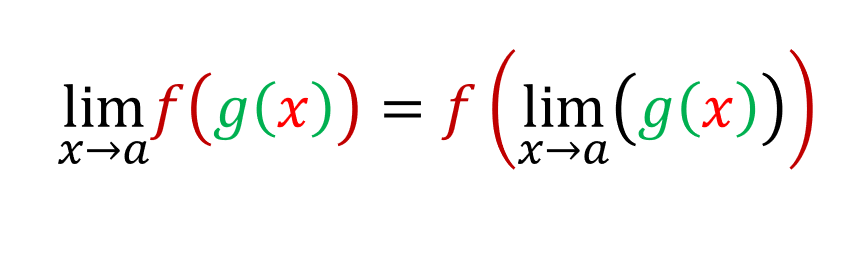
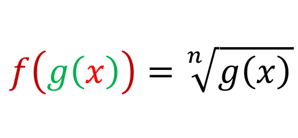
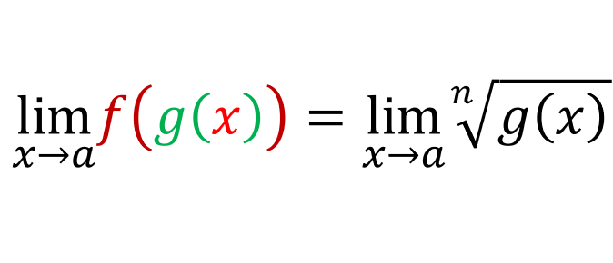
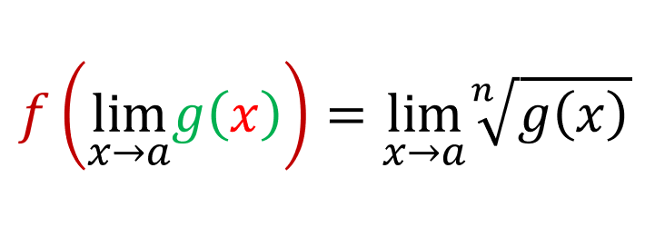
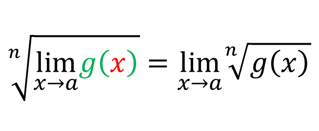

Suppose that a function f(x) is continuous at [x = b] and that [limx->a g(x) = b], then [limx->a f(g(x)) = f(b)]. In other words:
Intuitively, this theorem is reasonable because if x is getting closer to a, then g(x) gets closer to b and since f(x) is continuous at b, then f(g(x)) is getting closer to f(b). Now lets say [f(x) = n√x]. Then in that case:
And if we take limit of both sides as x approaches a:
Using the above theorem, we get:
By definition of f(x):
You can use the same method to prove the power rule, just let [f(x) = xn].